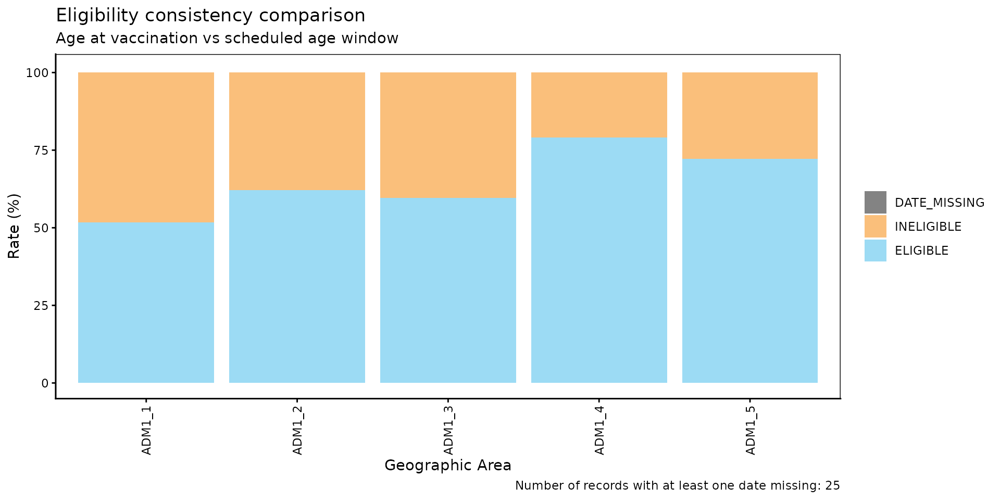
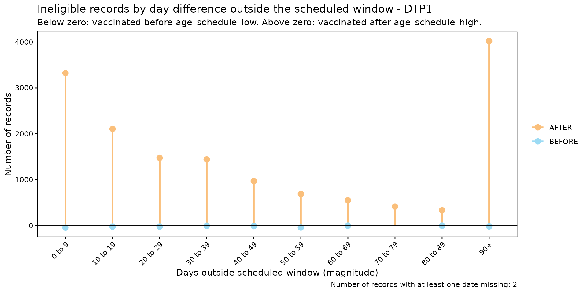
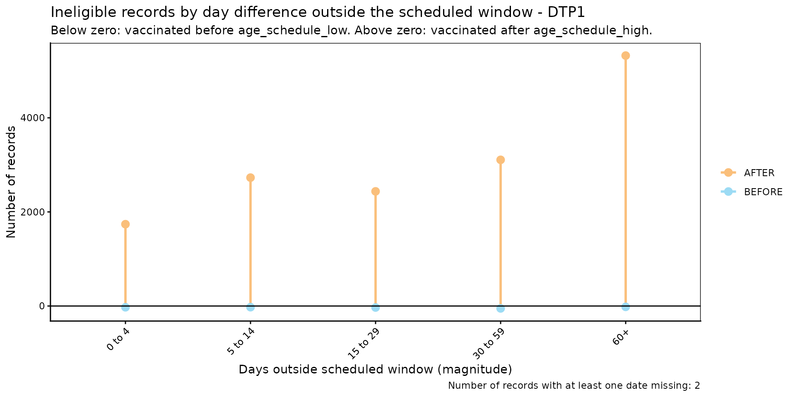

Eligibility Consistency Comparison
PAHO/CIM
July 28, 2026
Source:vignettes/articles/en/eligibility_consistency_comparison_en.Rmd
eligibility_consistency_comparison_en.RmdRationale
National immunization schedules define, for each dose, a target age window during which a person is expected to be vaccinated (e.g., DTP1 should be administered between 54 and 90 days of age). A vaccination event that falls outside that window — administered too early or too late — indicates either a data quality issue or a programmatic gap in service delivery timeliness.
The eligibility consistency comparison module allows users to
systematically identify, quantify, and visualize whether the age at
vaccination (date_vax - date_birth) falls within the age
window defined by the vaccination schedule
(age_schedule_low, age_schedule_high).
Note
All functions used for eligibility consistency comparison analyses within PAHOabc begin with the
ecc_prefix.
Warning
The
ecc_functions calculate age at vaccination asdate_vax - date_birth. Ifdata.EIRcontains records wheredate_vaxoccurs beforedate_birth(i.e., a negative age at vaccination), this points to a date consistency error rather than an eligibility one. When this happens,ecc_functions will emit a warning directing you to the (D)ate (C)onsistency (C)omparisondcc_module to identify and resolve those records first.
Glossary
Political Geographic Boundaries
Throughout this vignette, we will make reference to different levels of political geographic boundaries. These levels are defined by the country/territory and can have different names from country to country. PAHOabc is agnostic to these names and requires the user to recode their variable names to fit the PAHOabc structure.
Namely, PAHOabc can distinguish three administrative levels, which listed from top to bottom level are: ADM0, ADM1 and ADM2.
- ADM0: The country. This is the top-most administrative level.
- ADM1: The first geographic subdivision in the country. ADM0 contains several ADM1 subdivisions.
- ADM2: The second geographic subdivision in the country. Each ADM1 contains several ADM2 subdivisions.
Usage
Load Data
The functions in this module require your EIR dataset and a vaccination schedule, both in the standard PAHOabc format.
EIR
The pahoabc::pahoabc.EIR data frame provides a
simulated, nominal-level table representing individual vaccination
events from an Electronic Immunization Registry (EIR). Each row
corresponds to a single vaccination act for a person.
pahoabc.EIR %>% head() %>% kable(caption = "Example Electronic Immunization Registry")| ID | date_birth | date_vax | ADM1_residence | ADM2_residence | ADM1_occurrence | ADM2_occurrence | dose |
|---|---|---|---|---|---|---|---|
| 191997 | 2023-08-08 | 2023-12-26 | ADM1_4 | ADM2_4_35 | ADM1_4 | ADM2_4_35 | DTP2 |
| 212189 | 2023-12-20 | 2023-12-26 | ADM1_5 | ADM2_5_61 | ADM1_5 | ADM2_5_61 | BCG RN |
| 118063 | 2022-09-15 | 2023-12-26 | ADM1_2 | ADM2_2_5 | ADM1_2 | ADM2_2_5 | DTP1 |
| 118063 | 2022-09-15 | 2023-12-26 | ADM1_2 | ADM2_2_5 | ADM1_2 | ADM2_2_5 | YFV1 |
| 130751 | 2022-10-27 | 2023-12-12 | ADM1_5 | ADM2_5_55 | ADM1_5 | ADM2_5_55 | YFV1 |
| 136532 | 2021-09-21 | 2023-12-26 | ADM1_3 | ADM2_3_12 | ADM1_3 | ADM2_3_12 | SRP1 |
-
ID: Unique person identification number. -
date_birth: Date of birth of person. -
date_vax: Date of vaccination event. -
ADM1_residence/ADM2_residence: First and second geographic administrative levels of residence. -
dose: Combined variable representing vaccine type and dose number (e.g., DTP1).
Vaccination Schedule
The pahoabc::pahoabc.schedule dataset defines the
national immunization schedule, listing each vaccine dose and the target
age window for its administration, in days.
pahoabc.schedule %>% kable(caption = "Example Immunization Schedule")| dose | age_schedule | age_schedule_low | age_schedule_high |
|---|---|---|---|
| SRP1 | 365 | 360 | 420 |
| DTP1 | 60 | 54 | 90 |
| DTP2 | 120 | 116 | 150 |
| DTP3 | 180 | 176 | 210 |
| BCG RN | 0 | 0 | 28 |
| YFV1 | 365 | 360 | 420 |
-
dose: Combined variable representing vaccine type and dose number. -
age_schedule: The recommended age of administration of the correspondingdose, in days. -
age_schedule_low: The lower limit for the target age, in days. -
age_schedule_high: The upper limit for the target age, in days.
Eligibility Consistency Comparison Analysis
Expected Workflow
The ecc_ suite contains four functions that work
together:
-
ecc_rate()— computes eligibility rates, optionally disaggregated by dose and geographic level. -
ecc_barplot()— visualizes the output ofecc_rate()as a stacked bar chart. -
ecc_inconsistent()— lists individual ineligible and missing records with their day difference from the scheduled window. -
ecc_inconsistent_plot()— visualizes the distribution of those day differences as a diverging lollipop plot.
The figure below shows the expected workflow.

Step 1 — Compute eligibility rates with ecc_rate()
ecc_rate() compares the age at vaccination against the
scheduled age window and returns the count and percentage of records
that are ELIGIBLE, INELIGIBLE, or
DATE_MISSING.
By default, vaccines = NULL pools all doses in
data.schedule together. Here we compute pooled rates at the
ADM1 level.
rate_df <- ecc_rate(
data.EIR = pahoabc.EIR,
data.schedule = pahoabc.schedule,
geo_level = "ADM1"
)## Warning in .validate_age_at_vax(prepare_EIR): Warning: 241 record(s) show a
## negative age at vaccination, meaning they were vaccinated before they were
## born. This indicates date consistency errors in data.EIR. Please check the
## (D)ate (C)onsistency (C)omparison dcc_ module (dcc_rate, dcc_inconsistent) to
## identify and resolve these records.
rate_df %>% kable(digits = 2, caption = "Pooled eligibility rates by ADM1")| ADM1 | eligibility | n | total | rate |
|---|---|---|---|---|
| ADM1_1 | DATE_MISSING | 2 | 14058 | 0.01 |
| ADM1_1 | ELIGIBLE | 7280 | 14058 | 51.79 |
| ADM1_1 | INELIGIBLE | 6776 | 14058 | 48.20 |
| ADM1_2 | ELIGIBLE | 46700 | 75165 | 62.13 |
| ADM1_2 | INELIGIBLE | 28465 | 75165 | 37.87 |
| ADM1_3 | DATE_MISSING | 22 | 333038 | 0.01 |
| ADM1_3 | ELIGIBLE | 198681 | 333038 | 59.66 |
| ADM1_3 | INELIGIBLE | 134335 | 333038 | 40.34 |
| ADM1_4 | DATE_MISSING | 1 | 45830 | 0.00 |
| ADM1_4 | ELIGIBLE | 36247 | 45830 | 79.09 |
| ADM1_4 | INELIGIBLE | 9582 | 45830 | 20.91 |
| ADM1_5 | ELIGIBLE | 17748 | 24597 | 72.16 |
| ADM1_5 | INELIGIBLE | 6849 | 24597 | 27.84 |
Specifying vaccines disaggregates the results by
dose, one row set per vaccine:
rate_by_dose_df <- ecc_rate(
data.EIR = pahoabc.EIR,
data.schedule = pahoabc.schedule,
geo_level = "ADM1",
vaccines = c("DTP1", "DTP2", "DTP3")
)## Warning in .validate_age_at_vax(prepare_EIR): Warning: 37 record(s) show a
## negative age at vaccination, meaning they were vaccinated before they were
## born. This indicates date consistency errors in data.EIR. Please check the
## (D)ate (C)onsistency (C)omparison dcc_ module (dcc_rate, dcc_inconsistent) to
## identify and resolve these records.
rate_by_dose_df %>% head(10) %>% kable(digits = 2, caption = "Eligibility rates by dose and ADM1")| dose | ADM1 | eligibility | n | total | rate |
|---|---|---|---|---|---|
| DTP1 | ADM1_1 | ELIGIBLE | 1647 | 2629 | 62.65 |
| DTP1 | ADM1_1 | INELIGIBLE | 982 | 2629 | 37.35 |
| DTP1 | ADM1_2 | ELIGIBLE | 10401 | 12606 | 82.51 |
| DTP1 | ADM1_2 | INELIGIBLE | 2205 | 12606 | 17.49 |
| DTP1 | ADM1_3 | DATE_MISSING | 2 | 56340 | 0.00 |
| DTP1 | ADM1_3 | ELIGIBLE | 45482 | 56340 | 80.73 |
| DTP1 | ADM1_3 | INELIGIBLE | 10856 | 56340 | 19.27 |
| DTP1 | ADM1_4 | ELIGIBLE | 6864 | 7690 | 89.26 |
| DTP1 | ADM1_4 | INELIGIBLE | 826 | 7690 | 10.74 |
| DTP1 | ADM1_5 | ELIGIBLE | 3472 | 4091 | 84.87 |
Step 2 — Visualize rates with ecc_barplot()
The output of ecc_rate() can be passed directly to
ecc_barplot() to produce a stacked bar chart. If
data is disaggregated by dose, the plot is
automatically faceted by dose.
ecc_barplot(data = rate_df)
ecc_barplot(data = rate_by_dose_df)
Parameters accepted
-
data: Output ofecc_rate(). -
within_ADM1: Character vector to filter to specific ADM1 units whengeo_level = "ADM2". Default:NULL. -
plot_missing: Boolean. IfTRUE(default),DATE_MISSINGrecords are shown as a separate bar segment so all bars sum to 100%.
Interpretation
Each bar represents a geographic unit and is divided into segments:
ELIGIBLE (blue), INELIGIBLE (orange), and
DATE_MISSING (grey). Bars that are predominantly orange
indicate units where a large share of doses are administered outside the
recommended age window — a signal worth investigating for service
delivery timeliness issues.
Step 3 — Inspect individual ineligible records with
ecc_inconsistent()
ecc_inconsistent() returns a record-level table of all
INELIGIBLE and DATE_MISSING entries, including
the number of days outside the scheduled window.
inconsistent_df <- ecc_inconsistent(
data.EIR = pahoabc.EIR,
data.schedule = pahoabc.schedule,
vaccines = "DTP1"
)## Warning in .validate_age_at_vax(prepare_EIR): Warning: 19 record(s) show a
## negative age at vaccination, meaning they were vaccinated before they were
## born. This indicates date consistency errors in data.EIR. Please check the
## (D)ate (C)onsistency (C)omparison dcc_ module (dcc_rate, dcc_inconsistent) to
## identify and resolve these records.
inconsistent_df %>% head(10) %>% kable(caption = "Sample of ineligible and missing DTP1 records")| ID | dose | date_birth | date_vax | age_at_vax | age_schedule_low | age_schedule_high | days_outside_range | eligibility |
|---|---|---|---|---|---|---|---|---|
| 118063 | DTP1 | 2022-09-15 | 2023-12-26 | 467 | 54 | 90 | 377 | INELIGIBLE |
| 187807 | DTP1 | 2023-07-19 | 2023-12-26 | 160 | 54 | 90 | 70 | INELIGIBLE |
| 212197 | DTP1 | 2022-10-23 | 2023-12-19 | 422 | 54 | 90 | 332 | INELIGIBLE |
| 101916 | DTP1 | 2021-10-21 | 2022-01-24 | 95 | 54 | 90 | 5 | INELIGIBLE |
| 120150 | DTP1 | 2022-04-21 | 2022-08-23 | 124 | 54 | 90 | 34 | INELIGIBLE |
| 61279 | DTP1 | 2022-01-11 | 2022-04-18 | 97 | 54 | 90 | 7 | INELIGIBLE |
| 205838 | DTP1 | 2023-08-04 | 2023-12-28 | 146 | 54 | 90 | 56 | INELIGIBLE |
| 15488 | DTP1 | 2020-06-15 | 2022-02-23 | 618 | 54 | 90 | 528 | INELIGIBLE |
| 61972 | DTP1 | 2022-03-21 | 2022-06-20 | 91 | 54 | 90 | 1 | INELIGIBLE |
| 90337 | DTP1 | 2022-03-18 | 2022-06-20 | 94 | 54 | 90 | 4 | INELIGIBLE |
Parameters accepted
-
data.EIR: EIR data frame in PAHOabc format. -
data.schedule: Vaccination schedule data frame in PAHOabc format. -
vaccines: Character vector of doses to include. DefaultNULLincludes all doses indata.schedule.
The days_outside_range column is negative when a person
was vaccinated before age_schedule_low, and positive when
vaccinated after age_schedule_high (NA when a
date is missing). This table can be exported for record-level correction
workflows.
Step 4 — Visualize the distribution of day differences with
ecc_inconsistent_plot()
ecc_inconsistent_plot() produces a diverging lollipop
plot of ineligible records, binned by the magnitude of
days outside the scheduled window. The same bins are shared by both
directions: records vaccinated too early are plotted below zero, and
records vaccinated too late are plotted above zero.
ecc_inconsistent_plot(
data.EIR = pahoabc.EIR,
data.schedule = pahoabc.schedule,
vaccines = "DTP1"
)## Warning in .validate_age_at_vax(prepare_EIR): Warning: 19 record(s) show a
## negative age at vaccination, meaning they were vaccinated before they were
## born. This indicates date consistency errors in data.EIR. Please check the
## (D)ate (C)onsistency (C)omparison dcc_ module (dcc_rate, dcc_inconsistent) to
## identify and resolve these records.
When more than one vaccine is specified, the plot is automatically faceted by dose:
ecc_inconsistent_plot(
data.EIR = pahoabc.EIR,
data.schedule = pahoabc.schedule,
vaccines = c("DTP1", "DTP2", "DTP3")
)## Warning in .validate_age_at_vax(prepare_EIR): Warning: 37 record(s) show a
## negative age at vaccination, meaning they were vaccinated before they were
## born. This indicates date consistency errors in data.EIR. Please check the
## (D)ate (C)onsistency (C)omparison dcc_ module (dcc_rate, dcc_inconsistent) to
## identify and resolve these records.
Parameters accepted
-
data.EIR: EIR data frame in PAHOabc format. -
data.schedule: Vaccination schedule data frame in PAHOabc format. -
vaccines: Character vector of doses to include, faceting the plot bydosewhen more than one is given. DefaultNULLpools all doses indata.schedule(no facet). -
day_groups: List ofc(lower, upper)numeric pairs defining the magnitude bins shared by both directions. The last bin is always extended toInfand labelled"X+". Default: 10-day bins from 0 to 100.
To use custom bin widths — for example, finer resolution for small differences:
ecc_inconsistent_plot(
data.EIR = pahoabc.EIR,
data.schedule = pahoabc.schedule,
vaccines = "DTP1",
day_groups = list(c(0, 5), c(5, 15), c(15, 30), c(30, 60), c(60, 120))
)## Warning in .validate_age_at_vax(prepare_EIR): Warning: 19 record(s) show a
## negative age at vaccination, meaning they were vaccinated before they were
## born. This indicates date consistency errors in data.EIR. Please check the
## (D)ate (C)onsistency (C)omparison dcc_ module (dcc_rate, dcc_inconsistent) to
## identify and resolve these records.
Interpretation
The horizontal axis shows the magnitude of days outside the scheduled
window, shared by both directions. Points below zero represent records
vaccinated too early (before age_schedule_low); points
above zero represent records vaccinated too late (after
age_schedule_high). Bins with large “too late” counts often
point to programmatic delays in service delivery, while “too early”
counts can point to data entry errors or off-schedule vaccination
campaigns.
Summary
The ecc_ module provides a complete pipeline for
assessing eligibility consistency in EIR data. Starting from
ecc_rate() for a geographic and dose-level overview,
through ecc_barplot() for visualization, to
ecc_inconsistent() for record-level inspection and
ecc_inconsistent_plot() for characterizing the magnitude
and direction of timing errors, the suite equips data managers and
public health analysts with the tools needed to detect, quantify, and
prioritize service delivery timeliness issues.